六个核桃案例解析华与华的经营使命是：让企业少走弯路。做咨询，不仅仅是帮企业做“战略咨询”，同时也是为企业临大事，决大疑，定大计。六个核桃，就是华与华为企业排除干扰，坚持自我，少走弯路的代表案例。2021 年 10 月，六个核桃母公司养元饮品公布第三季度业绩报告，截止 2021 年 9 月，企业实现营收 50 . 12 亿元，同比增长 65 . 99 %；净利 16 . 30 亿元，同比增长 39 . 54 %，营收净利双增长，增速领跑国内植物蛋白饮料行业。而在 2020 年 9 月，当六个核桃找到华与华时，企业正面临着产品销量波动的困境。在这一年的时间里，华与华为六个核桃做了哪些事呢？学习本文，您将学到以下 5 个核心知识点：1 、找到真因，临大事，决大疑，定大计；
2 、商品即信息，包装即媒介。基于“三现主义”的超级符号放大术，实现货架陈列优势；3 、华与华的广告投资观：广告标配，交品牌税。药不能停，药不能换，药量不能减；4 、 15 秒 TVC 广告不是讲故事，是耍把戏，是“产品演出”。 要用 15 秒钟让人掏钱，买他第一次听到的产品；5 、营销日历就是“品牌生物钟”，形成营销时间节拍，积累品牌资产。
1找到真因临大事 决大疑 定大计华与华经常讲“哲学级洞察，原理级解决方案”，这里的哲学，不是指品牌的哲学、营销的哲学，而是指人的哲学，人心的哲学。《大学》中说：“止定静安虑得——知止而后有定，定而后能静，静而后能安，安而后能虑，虑而后能有所得。”心定之后才能知止，才能止于至善。这就是企业哲学，也是华与华的企业心学。
养元饮品成立于 1997 年， 24 年间，用六个核桃一款大单品，实现销售额从 0 至 100 亿销售规模，并在 2015 年达到了巅峰。从 2016 年起，六个核桃销量开始出现波动，这也是六个核桃找华与华想解决的课题。

找到真因，是华与华方法的重大战略价值。任何事情一定要找到真因，找不到真因，就无法制定对策，正所谓“临大事，决大疑，定大计”。要找到真因，首先在于企业寻宝，找到企业过去成功的真因是什么。六个核桃过去的成功，堪称是快消品行业教科书式的标杆案例，在企业寻宝的过程中，我们总结了六个核桃过去成功的 4 大真因：1 ）命名的成功：“六个核桃”直接与品类产生关联，占据“核桃乳”大品类，同时数字+品类的命名方式简单易记，消费者一听就能明白，一听就能记住；2 ）广告语的成功：“经常用脑，多喝六个核桃”，把“核桃补脑”这个文化母体和消费常识，直接和品牌嫁接，极大降低了品牌的营销传播成本；3 ）渠道策略的成功：以“农村包围城市”的渠道策略及大流通渠道政策，布局全国 100万家终端网点，用最短的时间完成了对全中国农村市场的覆盖；4 ）推广的成功：聘请鲁豫为代言人，从 2010 年开始从地方到央视的大传播、大广告策略，迅速打开了全国知名度。
通过这一系列动作， 2010 - 2015 年，六个核桃进入了高速发展期，但随着销量的快速增长，负面的报道也接踵而至。2016 年起，媒体对于六个核桃“是否有益大脑”、“是否真材实料”等问题产生了一系列质疑。而面对媒体的负面报道，企业放大了这些负面舆论的影响，接下来的动作也产生了分化：第一，广告语的分化。弱化了主广告语“经常用脑，多喝六个核桃”。 2017 年将主广告语换成了“狂烧脑，为闪耀”， 2019 年又将主广告语改为“让自然智慧，陪伴聪明的
你”。将“经常用脑，多喝六个核桃”放在了从属地位。第二，代言人的分化。 2018 年，认为品牌需要年轻化，启用了新的品牌代言人王源。2019 年认为需要表现真材实料，将代言人换为郎朗。三年两次更换广告语和代言人，造成了品牌资产的分化，消费者对品牌的认知也产生分化。
“誉满天下，谤亦随之”我们寻找真因，企业为什么会出现负面舆论？究其原因，是因为六个核桃成功了！誉满天下，谤亦随之。你有美誉，就一定会有诽谤，这也是人性的规律和基础。
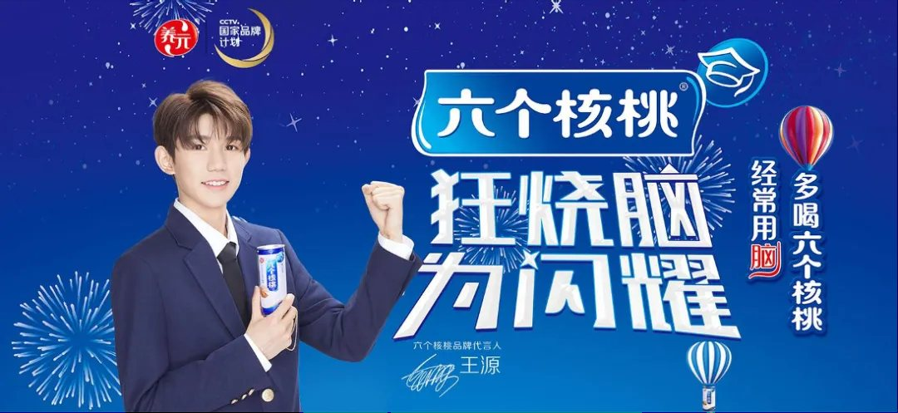
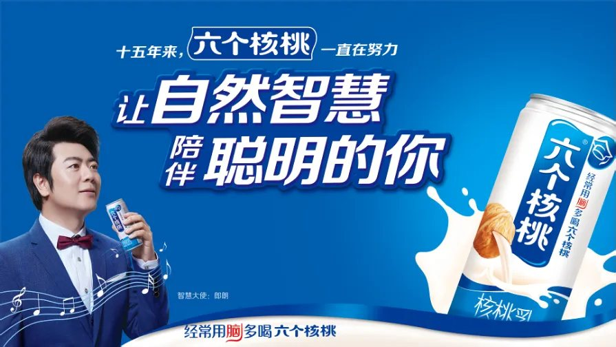
所以，负面舆论不是问题，自己过度重视负面舆论反而会造成问题。而人往往会过于放大自己的负面。所以，华与华认为，六个核桃产品销量波动的真因，不是因为媒体舆论质疑，而是舆论质疑之后，企业自己的动作分化，品牌资产也分化了。因此，解决六个核桃销量波动真因的对策，在于“宣传战”。宣传的本质就是不断的重复灌输一个结论，重复不变。在宣传中，每次变化的部分，都是为不断重复的那几句话服务的。重复的部分是君，变化的部分是臣。如果重复的部分改变了，那就出问题了。因此，华与华对六个核桃的第一个重大判断，就是排除负面舆论干扰，坚持曾经做对了的动作，重拾「经常用脑，多喝六个核桃」这句广告语作为主宣传语， 100 年不变。
重拾广告语是为六个核桃制定的关键决策，但只有广告语是不够的，因此，华与华还为六个核桃制定了三大关键动作：第一，打造超级包装，基于“三现主义”的超级符号放大术，获得在终端的陈列优势；第二，用华与华“吃药三原则”，发动六个核桃品牌宣传战；第三，打造营销日历，形成品牌生物钟。
2
基于“三现主义”的超级符号放大术打造超级包装对于快消品行业来说，包装设计是品牌营销的战略重心和决胜点。商品即信息，包装即媒介，一个好的包装设计，胜过 1 亿的广告费。华与华的创意和设计都不是在办公室里头脑风暴出来的，而是必须要去到现场，发现并总结出来的。我们基于华与华方法的三现主义：现场、现物、现实。从事实出发，一切问题在现场，走到现场看问题。
▲华与华六个核桃项目组同事在超市售卖产品
通过市场走访我们发现，六个核桃与其他快消品不同，它是一个以整箱销售为核心的产品，整箱购买我们产品的消费者占到 90 %以上。华与华说，一切的包装设计要基于最终的使用场景来思考，我们很快确定箱体包装设计，是六个核桃包装设计的战略重心，也是品牌最重要的广告位。
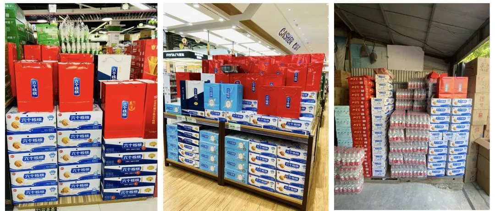
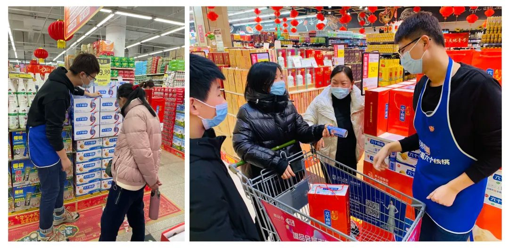
既然是广告位，我们就要解决一个核心问题，如何用一个最大化的刺激信号，来吸引消费者的注意，以谋求消费者最大的行动反射呢？
用超级符号，放大刺激信号华与华说，寻找品牌的超级符号就是找到它的“原力”，要挖掘品牌与生俱来的戏剧性。六个核桃是一个超级品牌名，我们就是要找到品牌与生俱来、能量最大的文化原力。我们发挥本能，不思而得，六个核桃的文化母体，就是“核桃”本身。找到了“核桃”这个文化母体，并将核桃与品牌名结合并放大，把一颗普通的核桃，变成“大核桃”，这就是一个“大创意”。
许多品牌终其一生都想谋求一个大创意，而我们说什么是大创意？大创意就是把创意放“大”。再小的创意，只要放得足够大，它就是大创意！有了超级符号，我们就基于三现主义，在包装上发挥超级符号最大的价值，用“超级符号放大术”，打造六个核桃的超级包装，释放品牌最强的刺激信号。
包装就是广告位，超级符号用到位在包装设计之前，我们先将六个核桃的箱体包装，拆解为：主板面、顶面和摇盖，三大关键接触点。
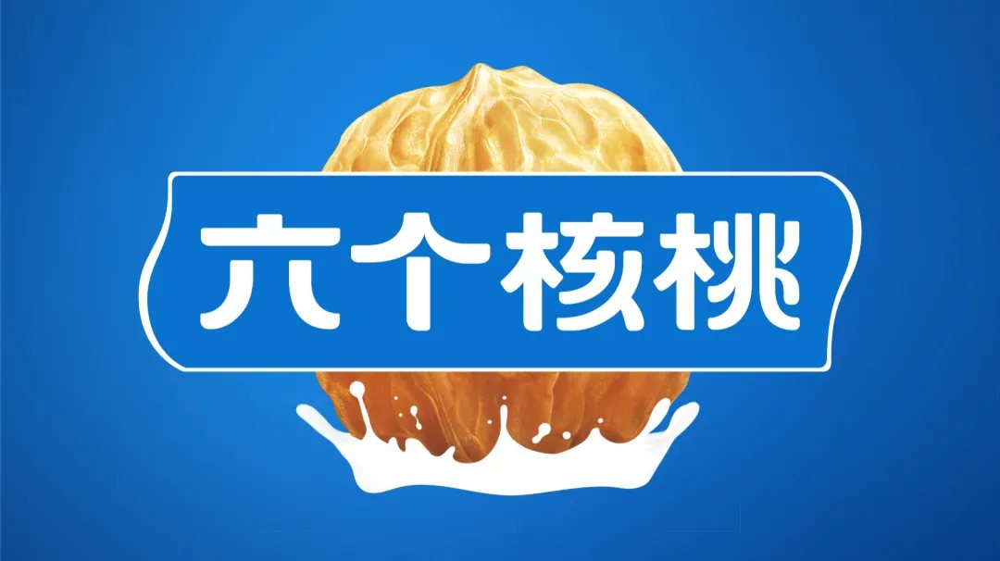
主板面，是包装在终端陈列的核心面，是能让消费者第一眼发现品牌的位置。因此，我们首先在主板面上，放大超级符号，将“大核桃”上下撑满放到最大，释放最强的刺激信号，让消费者远远就能发现我们。
其次，在走访市场中我们发现，超市在陈列我们产品时，摇盖也会成为品牌露出的一面，因此，我们同样也放上超级符号，让一个箱子的四周都有超级符号，集中释放超级符号的能量信号。
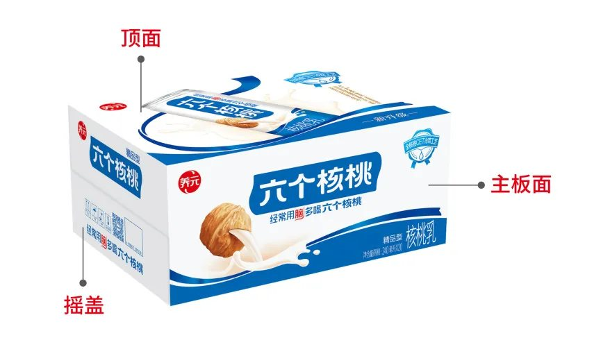
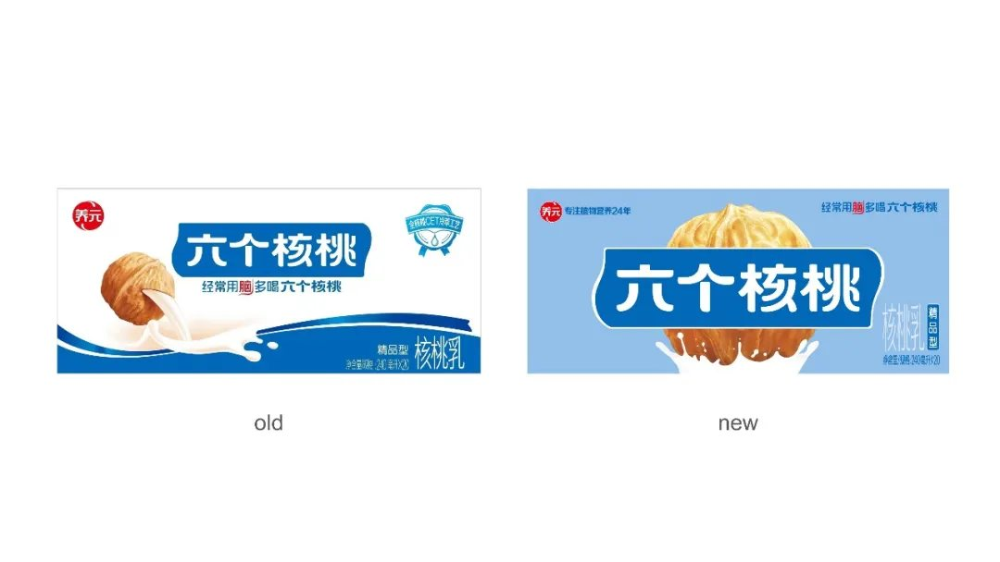
广告语上包装，强化品牌资产“经常用脑，多喝六个核桃”的广告语是六个核桃最重要的资产，也是打动消费者的购买理由。因此，我们用“中轴对称”的设计版式，将重新改善的罐体包装和广告语放至在箱体顶面，在有限的空间里将六个核桃品牌名和包装放到最大，不仅提升了视觉效果，也向消费者的下达了行动指令。
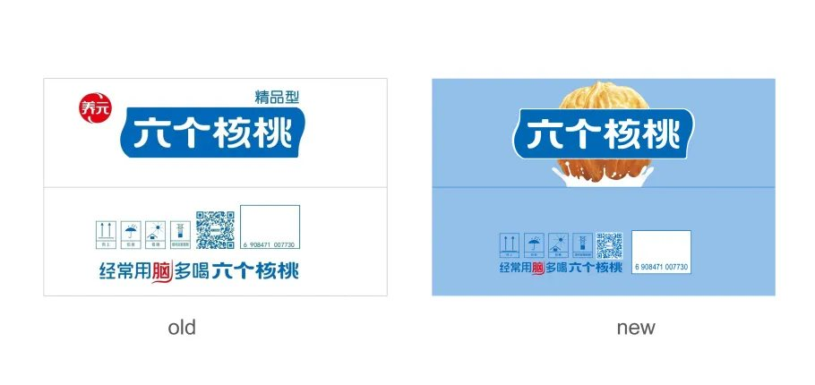

不仅如此，我们还对六个核桃全系产品包装进行了重新设计，统一超级符号，统一包装版式，一以贯之。积累品牌资产的同时，放大品牌的刺激信号，让产品包装在终端错综复杂的环境中，获得陈列优势，让消费者一眼就被这颗“大核桃”所吸引，在终端用超级包装释放六个核桃品牌刺激信号。
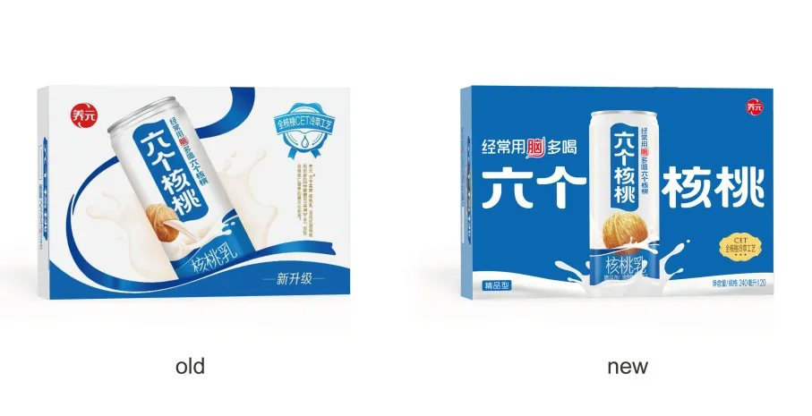
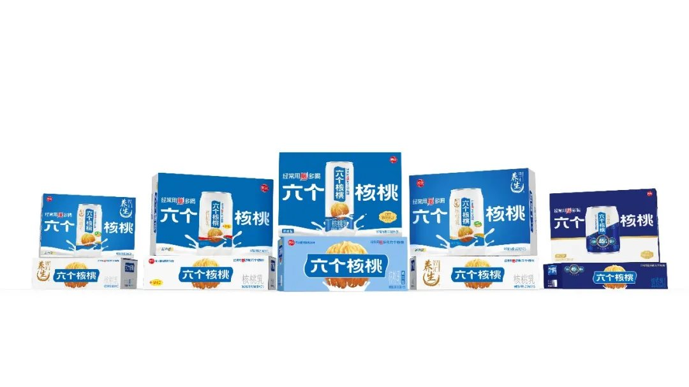
3“吃药三原则”发动品牌宣传战拉斯韦尔在《世界大战中的宣传技巧》一书中提到：“宣传，其实就是思想对思想的战争。”对于品牌来说也是如此，品牌传播的一切工作都是在对消费者进行宣传。在回顾总结六个核桃成功的真因时我们发现，大广告策略曾经是助力六个核桃品牌腾飞的关键策略，这背后是品牌对“宣传”的重视。我们常说，企业过去的成功，是因为过去做对了一些事情，企业遇到问题，是因为把原来对的事情给丢了。而华与华的工作，就是“捡起”，捡起曾经六个核桃成功的决策和行动，重启大广告策略，发动品牌宣传战。品牌宣传战，关键在于“宣传”。发动品牌宣传战，就要掌握宣传的本质——重复！拿破仑曾经说过：“极为重要的修辞法只有一个，那就是重复。”
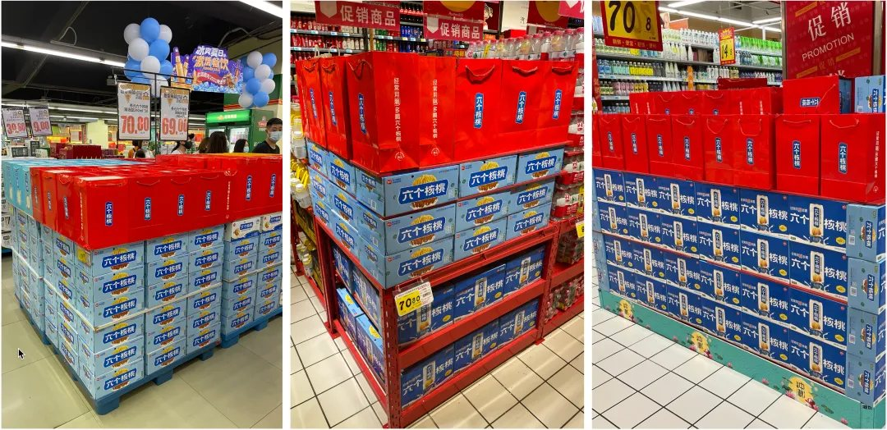
为此，我们为六个核桃制定了“品牌宣传战” 3 大关键动作：
关键动作一：广告标配，交品牌税，广告持续不停药，重回央视打广告说到宣传，大家的第一反应就是打广告。那么，华与华对于广告投资的理念是什么呢？华与华认为，投广告就是交品牌税！广告投放应该成为所有企业的标配，不要考虑它“有没有效”，因为这根本不是问题，会问这个问题，本质是企业主还舍不得花钱罢了。企业应该把投广告当交品牌税，自己定一个税率，每年首先确保把钱花光，然后再考虑效果问题，就算“没效果”，也比不投强。这就叫：广告标配，交品牌税。比如华与华，从 2008 年以来，就持续不断的在北京、上海两地的机场、航机杂志投放广告，我们给自己定的品牌税率是 10 %，每年的首要任务，就是如何保证把这 10 %的广告费花光。
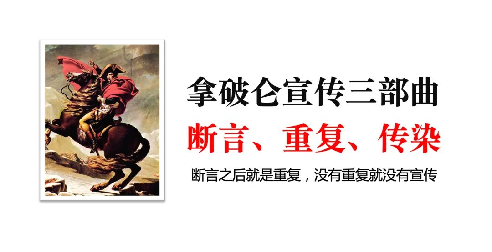
这也是华与华给所有客户做一个样本：广告不能急功近利，着急了就烧钱，手头紧就全停了，始终要遵循华与华的“吃药三原则”：药不能停，药不能换，药量不能减。六个核桃自 2010 年开始聘请代言人鲁豫，并在每年的春节、中秋等核心的销售节点，在央视开始大规模投放广告，让六个核桃品牌迅速打开了全国的知名度。但由于受到媒体舆论的冲击不仅减少了央视的投放，还改变了广告的内容。
因此，品牌宣传战的第一步，就是让六个核桃遵循“吃药三原则”：药不能停——重回央视，继续投放品牌广告；药不能换——重复宣传品牌广告语：经常用脑，多喝六个核桃；药量不能减——从原先的阶段性投放，改为全年不间断投放，提高曝光度。
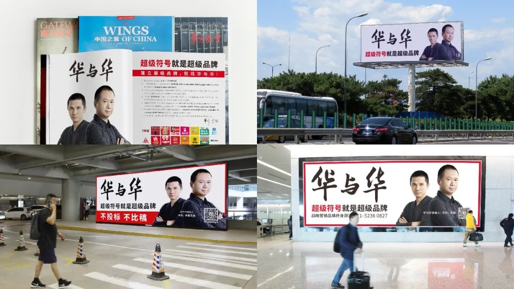
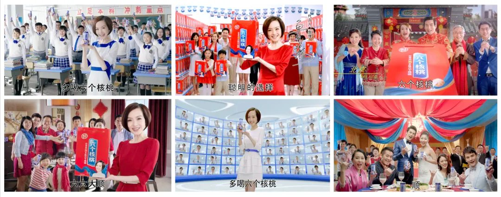
为什么要重回央视？这是基于华与华对于媒介的理解。华与华提出媒介信号论：广告是企业给顾客发信号，信号必须贵，如果信号不贵则信号无效，并且信号的媒介要强，能量越强，反射越大；并且要重复，不断地重复。试问，在中国的传统媒体中，还有哪个媒体比央视更贵？哪个媒体的信号能量比央视更大呢？答案便不言而喻了。既然重回央视，那就需要考虑到广告传播的内容是否能有效释放，是否能放大品牌传播的信号，提高宣传的效率。因此，我们为六个核桃重新创作拍摄了全新的品牌超级广告片。华与华创作的广告片，不是讲故事，而是“耍把戏”，是用 15 秒钟让人掏钱，买他第一次听到的产品。“把戏”是什么？“把戏”是能让你目不转睛地看，一字不落地听，全盘接收你传达的意见，并倾向于接受你提供的结论。华与华对于广告片的创作，有四大原则：① 记住品牌叫什么名字——记住我是谁；② 记住商品长什么样子——记住我的样子；③ 给人购买理由和冲动——知道好在哪，让人想买；④ 建立品牌符号和企业战略优势——留下品牌资产，让人认准了下次再来、持续买。如今，观众对广告片的“耐药性”越来越高，沟通的成本也越来越高。基于此，在创作六个核桃超级广告片时，我们抓住了两个核心：一个是重复，一个是“耍把戏”。
关键动作二：进高铁，进社区，多打硬广告，少做软宣传在品牌宣传战中，除了央视，我们还选择了高铁站和社区电梯，作为六个核桃的品牌宣传阵地。这也是遵循六个核桃企业自身的现状和禀赋。六个核桃的核心销售渠道在下沉市场，因此，我们建议六个核桃占领高铁站广告这一媒介形式。为什么选择高铁站？首先，高铁站覆盖面广，上到一二线城市，下到五六线县城，都满足六个核桃全国渠道布局所能覆盖的人群；其次，节日是六个核桃重要的营销节点，也是高铁站人流的高峰期。拿春运举例，每年春运大约 40 天的时间里，大约有 30 多亿人次的人口流动，被誉为人类历史上规模最大的周期性“人类大迁徙”。这便意味着，春运期间 30 多亿次的人流，就等于 30 多亿次的广告曝光。因此， 2021年六个核桃在全国 500 +高铁站，投放了大屏 LED 平面广告，覆盖核心销售市场。铺天盖地的六个核桃广告，不仅发出了品牌强有力的信号，还增强了各地经销商对品牌的信心， 2021 年中秋销售目标超额完成，达成率为 104 %。

对于快消品企业来说，媒介投放要打“组合拳”。高铁站覆盖了核心销售市场，而社区电梯广告，就是要覆盖家庭日常饮用的消费人群。六个核桃与新潮传媒达成年度战略合作，覆盖全国 28 个省， 100 +个城市， 60 万+部电梯，与高铁广告双管齐下，形成同频的宣传节拍。
关键动作三：占堆头，刷门头，终端全面媒体化据美国广告协会统计：消费者中 19 %是事前决定要什么而走进商店的，而其余的 81 %则是受终端媒体化的影响而购买的。因此，终端是消费者实现购买的第一现场，也是品牌在渠道的“战场”，谁掌握了终端，谁就拥有主动权。
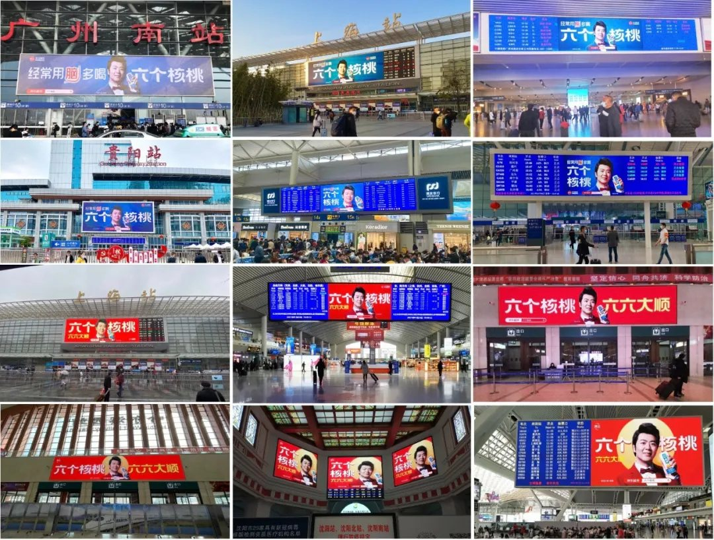
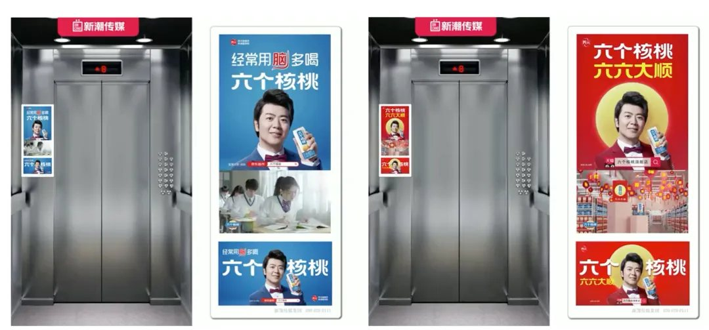
六个核桃的渠道分布是以 KA 、流通渠道为主，全国拥有 100 万家终端。如何让消费者在终端上一眼就看到六个核桃的货架，并且被吸引购买更多的产品，是销量提升的关键，也是快消品销售中最为重要的一环。1 ） KA 渠道占堆头KA 渠道的终端不仅是消费者购买的第一现场，还是品牌向消费者传播的道场。往往在超市里有更多货柜、更多产品、更多物料露出品牌信息的，消费者自然而然会认为是大品牌！因此，占领堆头，将 KA 终端的堆头打造成品牌的道场尤为重要。
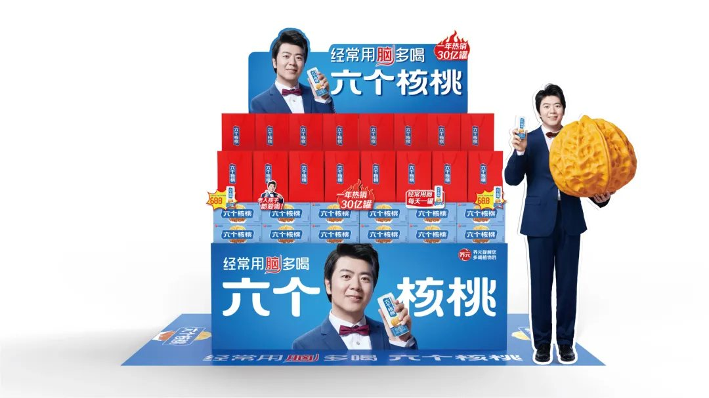
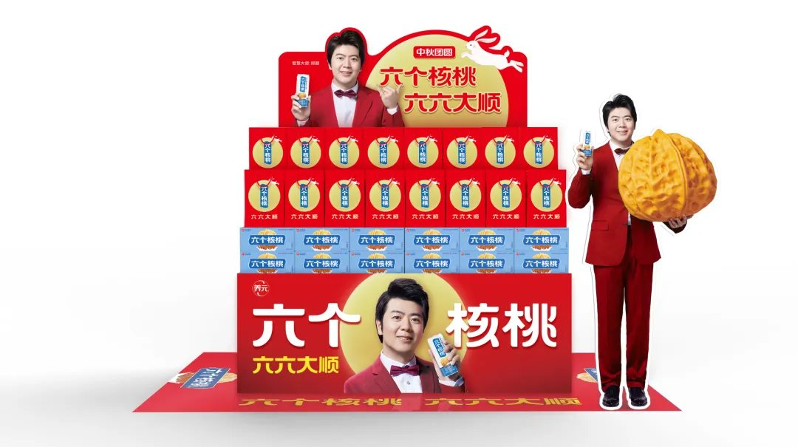
打造六个核桃的 KA 品牌道场，核心是提升品牌发现感，让六个核桃堆头能一眼跳出来，因此在设计中，核心是放大六个核桃的品牌名、大核桃符号和代言人郎朗的形象。并且针对不同堆头的类型，制作成《终端全面媒体化落地执行手册》，让全国的经销商好执行、好操作、好落地。
▲六个核桃终端实拍照片
2 ）流通渠道刷门头流通渠道主要是以小型超市、小型食品店、小百货店为主，因此在流通渠道，终端门店就是品牌最佳的广告位。其中，门店的门头是各大品牌抢占的第一广告位，早在 2005 年，华与华就为晨光文具，制定了门头战略以及晨光样板店工程，一直延续至今。因此，我们为六个核桃规划了终端流通门店刷门头工程，并在 4 个月的时间里快速执行，统一放上了“大核桃”超级符号，在县级市场释放能量最强的媒介信号。
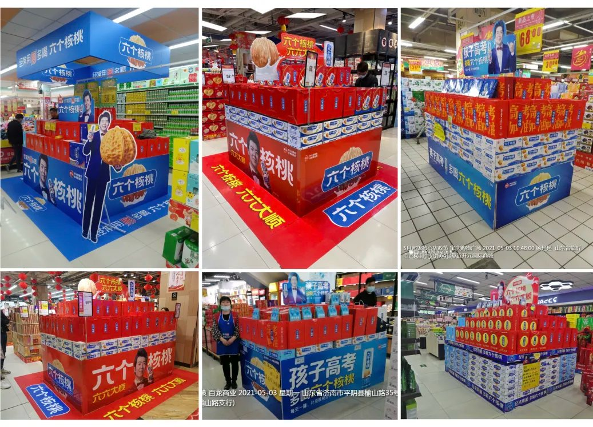
4打造全年 3 大营销日历形成品牌生物钟，积累品牌资产营销日历就是“品牌生物钟”，就是给品牌形成固定的营销节拍和主题，重复积累，把营销活动也做成品牌资产，形成品牌生物钟，是在内部形成所有员工一年的工作节拍，自动重复，精益求精；在外部，则是在顾客脑海里形成消费生物钟，到时间他就来。六个核桃在过去多年的实践中，已经形成了一套标准的时间节拍。我们在六个核桃过去的基础上，稳固延续品牌资产，打造三大营销日历：高考季、中秋节和春节。
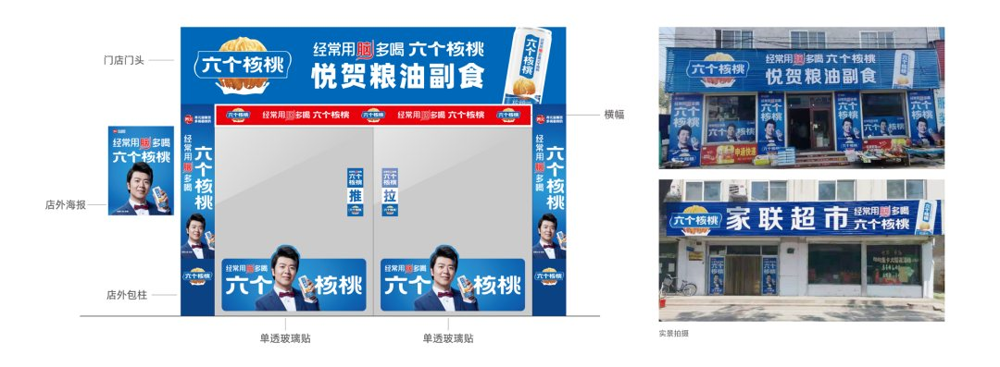
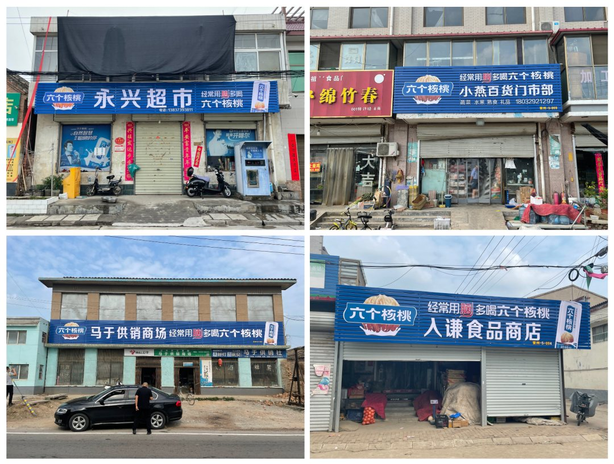
高考季，扎根文化母体：孩子高考，多喝六个核桃每年的 4 - 6 月正逢火热的高考备考时期，因此，每年六个核桃都会聚焦在高考的主题上进行品牌传播活动。聚焦高考，首先是要创造一句高考季的核心传播话语。我们说，广告语不是我们创造一句话告诉消费者听，而是创造一句话让消费者说给别人听，要找到文化母体。顾名思义，高考的文化母体，一个是“高考”，首先要先占住“高考”这个词，是谁高考呢，是孩子高考。我们的宣传对象，就是家里有孩子正在准备高考的父母家长。因此，我们将话语寄生在母体之中，并延续“经常用脑，多喝六个核桃”的超级句式，创作了六个核桃高考季的核心传播话语：孩子高考，多喝六个核桃。

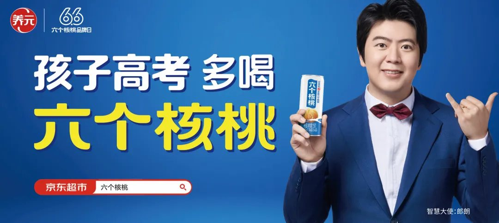
我们还创意了六个核桃高考季 TVC ，延续“孩子高考，多喝六个核桃”和“ 666 ”的品牌资产。高考季 TVC 广告词：这段时间，孩子高考，特别用脑多喝六个核桃，脑子 666每天一罐 补充核桃营养孩子高考 多喝六个核桃脑子 666每天一罐哦
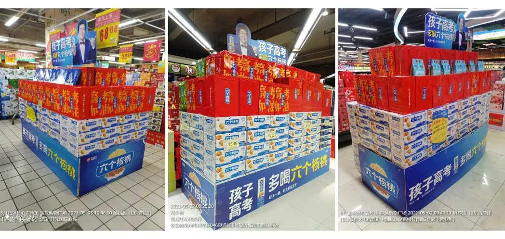
为了放大六个核桃高考季的能量信号，我们和客户共同创意策划了“ 6 月 6 六个核桃孔庙祈福节”，一同前往山东曲阜孔庙，为全国广大考生祈福，并且在高考 3 天期间，在核心市场的高中，开展“考生免费领核桃乳”的活动。通过一系列的动作，将“ 6 月 6 六个核桃孔庙祈福节”打造成专属的品牌活动，年复一年，持续积累，持续精进。
中秋节、春节，稳固品牌资产：六个核桃，六六大顺中秋节和春节是六个核桃全年重要的两大营销节点，因此，在营销主题上，首先要做到一以贯之，稳固延续品牌资产。华与华的品牌资产观，是能给企业带来效益的消费者品牌认知，做任何一件事，一个创意、一个设计、一个活动，都要问自己：能不能形成资产，能不能保护资产、能不能增值资产，如果能，就坚决重复投资。自 2013 年起，六个核桃的节庆主题一直是：“六个核桃，六六大顺”，是在过年过节家庭团聚、走亲访友时，让消费者传递的一句美好祝福。因此，在中秋节和春节的营销上，我们建议持续投资“六个核桃，六六大顺”，管用100 年。
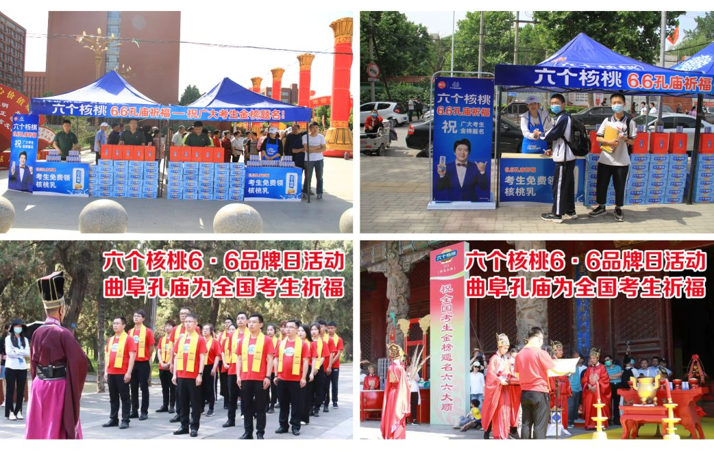
其次，我们还对终端的堆头进行了主题化设计，将堆头设计的重心聚焦在围挡和插卡的氛围营造上，不仅放大了终端的刺激信号，还提升了终端的节庆热卖氛围。
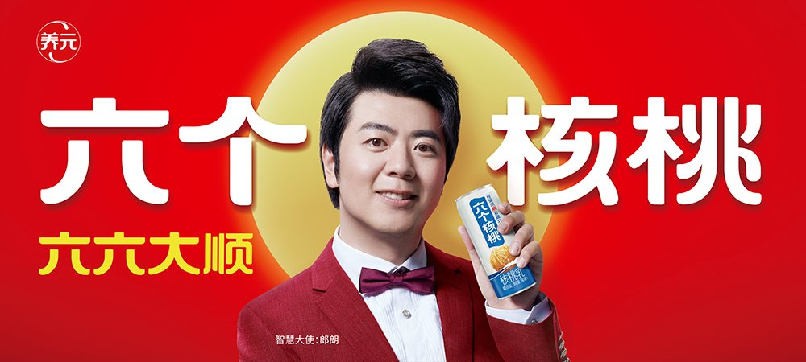
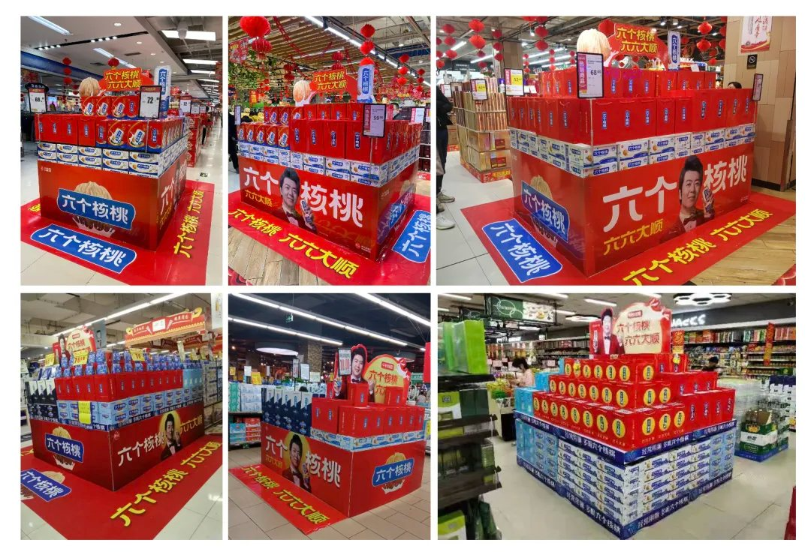
不仅如此，针对于中秋节和春节两大营销节点，品牌 TVC 我们也同步进行了创作拍摄，延续“大核桃”和“ 666 ”的品牌资产，统领节庆期间在央视上的传播。中秋节/春节 TVC 广告词：六个核桃，送孩子，学习 666 ！六个核桃，送亲友，工作 666 ！六个核桃，送长辈，身体 666 ！春节送礼/中秋团圆，六个核桃， 666 ！
本文总结华与华与六个核桃的合作，不仅仅是提供咨询方案，还在企业经营发展出现波动困境时，及时准确的找到真因，临大事、决大疑、定大计，是华与华帮助企业排除干扰，坚持自我，少走弯路的代表案例。一年时间，六个核桃快速恢复品牌销量和势能，实现营收和利润双增长，我们总结了 4大关键动作：第一，找到真因，临大事，决大疑，定大计。重拾广告语：经常用脑，多喝六个核桃。
第二，打造超级包装。在终端放大品牌信号刺激，实现终端的货架优势。第三，发动品牌宣传战。遵循华与华“吃药三原则”，药不能停，药不能换，药量不能减：上央视，进高铁，进社区，占堆头，刷门头，重振品牌市场声量。第四，打造全年 3 大营销日历。形成品牌生物钟，积累增值品牌资产，形成全年营销节拍。